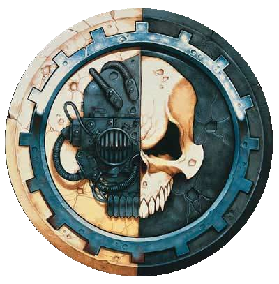
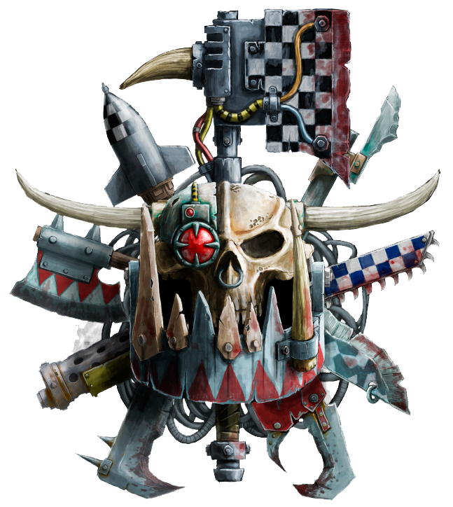

Factions
The Adeptus Mechanicus is the official Imperial name within the Adeptus Terra for the Cult Mechanicus or Cult of the Machine based on Mars which provides the Imperium with its scientists, engineers and technicians. The Adepts of the Mechanicus are the primary keepers of what is viewed as sacred wisdom, a privileged caste of Tech-priests who jealously guard the knowledge required to maintain and construct much of the Imperium's advanced technology.
The Orks, also called Greenskins, are a savage, warlike, green-skinned race of humanoids who are spread all across the Milky Way Galaxy. They share many features with Warhammer Fantasy Orcs (and were initially called "Space Orcs" to distinguish them). They are seen by their enemies (pretty much everyone else in the universe) as savage, warlike, and crude, but they are the most successful species in the whole galaxy, outnumbering possibly every other intelligent race, even Mankind (with the very plausible exception of the Tyranids).
The Imperium of Man is a galaxy-spanning interstellar human empire, the ultimate authority for the majority of the human race in the Milky Way Galaxy in the late 41st Millennium A.D. It is ruled by the living god who is known as the Emperor of Mankind. However, there are other humanoid species classified as Imperial citizens, mainly mutant offshoots of genetic base-line humans who are known as Abhumans and include such human sub-races as the Ogryns, Ratlings and Squats.